Box Jellyfish
Box Jellyfish are passive saltwater creatures that have a total of 6 distinct variants. Although they are passive, they do
pose a danger in the fact that, if a player gets too close, the jellyfish can deliver a nasty sting causing negative
effects and damage to the player. Players can raise a grow box jellyfish through the use of the box jellyfish polyp.
Spawning
Box Jellyfish spawn in all nearly oceans, except for warm oceans and frozen oceans. The way box jellies spawn naturally is by replacing some naturally spawning aquatic mob. In the case for all the oceans it spawns in, each cod has a chance to be replaced by a box jellyfish. When a box jellyfish spawns, it can spawn as one of 6 color variants, most of which have an equal chance to spawn, except for the pink variant, which is extremely rare. Below shows a table of the spawn rates for the box jellyfish.
| Biome | Spawn Chance (Replacement Chance) | Group Size |
|---|---|---|
| Ocean/Deep Ocean | 8% (Cod) | 1 |
| Cold Ocean/Deep Cold Ocean | 8% (Cod) | 1 |
| Lukewarm Ocean / Deep Lukewarm Ocean | 8% (Cod) | 1 |
Below shows a table on the spawn rates for the color variants when a box jellyfish spawns in:
| Variant | Chance to spawn |
|---|---|
| Blue | 17.86% |
| Brown | 17.86% |
| Yellow | 17.86% |
| Ghost | 17.86% |
| White | 17.86% |
| Pink | 1.79% |
Items
Item drop chances
Box Jellyfish have 2 possible items they can drop upon death. One item they can drop is called the nematocyst gel, and the other is a box jellyfish polyp. The color of the polyp entirely depends on the color variant of the box jellyfish that is killed (for example, blue box jellyfish only drop blue box jellyfish polyps). When a box jellyfish dies, it can drop 0 - 2 items in total, each item can be defined by something called a "roll", so there are a minimum of 0 roll, and a maximum roll of 2. Below shows a table of the item drop chances:
| Item | Chance | Count (per roll) |
|---|---|---|
| Nematocyst gel |
|
1 |
| Box Jelly Polyp |
|
1 |
Nematocyst Gel
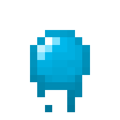
The nematocyst gel is an item exclusively dropped by box jellyfish, and is used as an easier way to obtain slimeballs without having to go to biomes like the swamp or mangrove swamp, or by needing to go deep underground. The box jellyfish has a good chance to drop the gel upon death, although it is less likely with the pink variant.
Processing
The nematocyst gel can only be processed into slimeballs using the Deep Blue Grill. Unlike most other cooking or processing done with the Deep Blue Grill, the only fuel source you can use to get slimeballs is by using two sticks. On top of that, you need two nematocyst gels in order to make one slimeball.
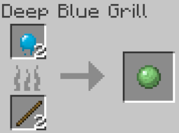
Behavior
Box Jellyfish are slow swimming creatures that can spawn in various colors. As stated in the spawning section, all variants have an equal chance to spawn, however the pink variant has an extremely low chance to spawn in. Due to this the chance for the pink variant to drop a polyp is much higher, so that if the player does encounter one, they are very likely to collect its polyp so the player can keep them as a pet.
Box Jellyfish are impartial to the player. They will not go out of their way to attack the player, but if the player gets too close, they can deliver a nasty sting. Below shows the stats for the sting it delivers. Keep in mind that they only sting players, excluding those in creative or spectator mode:
- Attack Cooldown: 1 second
- Targets: Players (Survival or Adventure mode)
- Attack Radius: 3 blocks
- Attack Type: Area of Effect, Sting
- Attack Damage: 3 HP (Survival or Adventure mode)
-
Negative Effects:
- Slowness III (3 seconds)
- Mining Fatigue (6 seconds)
- Weakness II (6 seconds)
Life Cycles and Raising Box Jellyfish
Box Jelly Polyp
Box Jelly Polyp (Item)
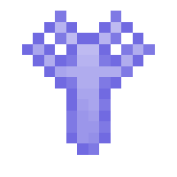
In order for the player to be able to raise box jellyfish, they cannot use a water bucket because of their size. Instead, the player must kill an adult box jellyfish for a chance to get a Box Jelly Polyp item (color may vary). The player can then use that polyp to spawn a box jelly polyp entity and wait for it to grow. All the player has to do is simply place the polyp item down on the ground, preferably in some body of water, or else the polyp will die.
Box Jelly Polyp (Entity)
The box jelly polyp is the first phase of a box jellyfish's lifecycle. Like with every other baby/juvenile variants of the Blue Depths mobs, they do not spawn naturally, they can only exist if a player (or blocks like dispensers or droppers) places a Box Jelly Polyp Item. These polyps have the potential to grow up and become a Juvenile Box Jellyfish, the next phase in the life cycle of a box jellyfish. These polyps will never despawn and cannot be killed unless their growth is stunted. Physically they look like a small colored, semi-transparent plant. The color of the polyp depends on which box jelly polyp is placed.
For a box jelly polyp to grow up to become a Juvenile Box Jellyfish , the player must wait a certain amount of time for the polyp to grow all by itself. The total time it takes for a polyp to become a juvenile is 6:40 minutes.
If the player wishes to stunt the growth of the polyp, meaning they want to prevent the polyp from ever growing, all the player has to do is drop coal near the polyp. Once a polyp's growth is stunted, it can become killable. This effect is irreversible. Unlike with vanilla mobs, Blue Depths mobs will not eat if you "use" an item on them, instead you must throw/drop the item close to them.
Below shows a table on how each method effects growth:
| Method | Growth Progress | Amount Required for Near-Instant Growth |
|---|---|---|
| Natural Growth (Doing nothing) | Growth progresses normally | Not applicable |
| Coal | Stops growth (irreversible) | Not applicable |
Box jelly polyps do not drop anything upon death.
Juvenile Box Jellyfish
Juvenile Box Jellyfish is the second phase in a jellyfish's lifecycle. Like the Box Jelly Polyp (Entity), juvenile box jellyfish do not spawn naturally, they can only be obtained when a polyp grows up. Juvenile box jellyfish looks just like mature jellyfish, except they appear smaller. These jellyfish have to potential to grow into mature jellyfish by simply waiting or giving it food to accelerate its growth. Juvenile box jellyfish do not despawn like wild mature jellyfish do.
For a juvenile box jellyfish to grow up to become an adult, the player must wait a certain amount of time for the juvenile to grow all by itself. The total time it takes for it to grow is 13:20 minutes.
If the player wishes to stunt the growth of the juvenile box jellyfish, meaning they want to prevent the juvenile from ever growing, all the player has to do is drop beetroot near the juvenile. This effect is irreversible. Unlike with vanilla mobs, Blue Depths mobs will not eat if you "use" an item on them, instead you must throw/drop the item close to them.
Below shows a table on how each method affects the growth of the juvenile:
| Method | Growth Progress | Amount Required for Near-Instant Growth |
|---|---|---|
| Natural Growth (Doing nothing) | Growth progresses normally | Not applicable |
| Beetroot | Stops growth (irreversible) | Not applicable |
Juvenile box jellyfish do not drop anything upon death.
History
Development History
| Datapack Version | Addition/Change |
|---|---|
| 1.0.0 (Initial Release) |
|
| 1.0.3 | Fixed a bug where players in creative or spectator mode would receive the sting effect when near the box jellies. |
Gallery

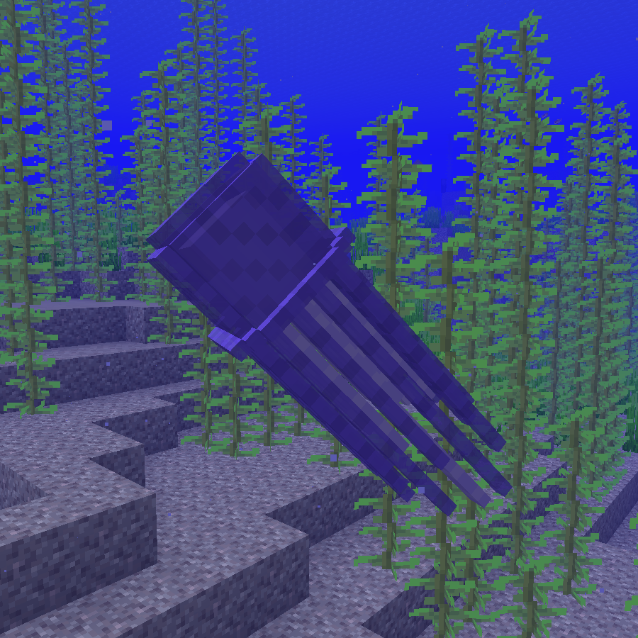
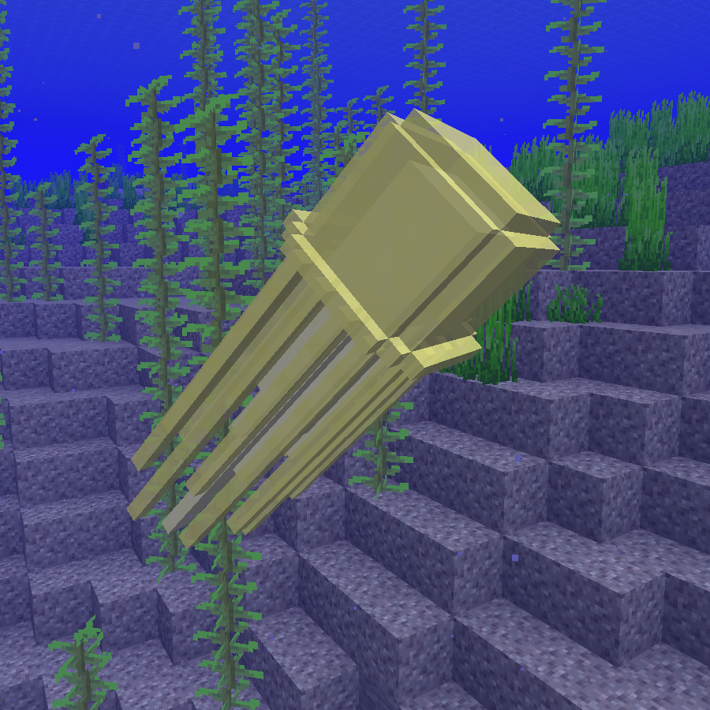
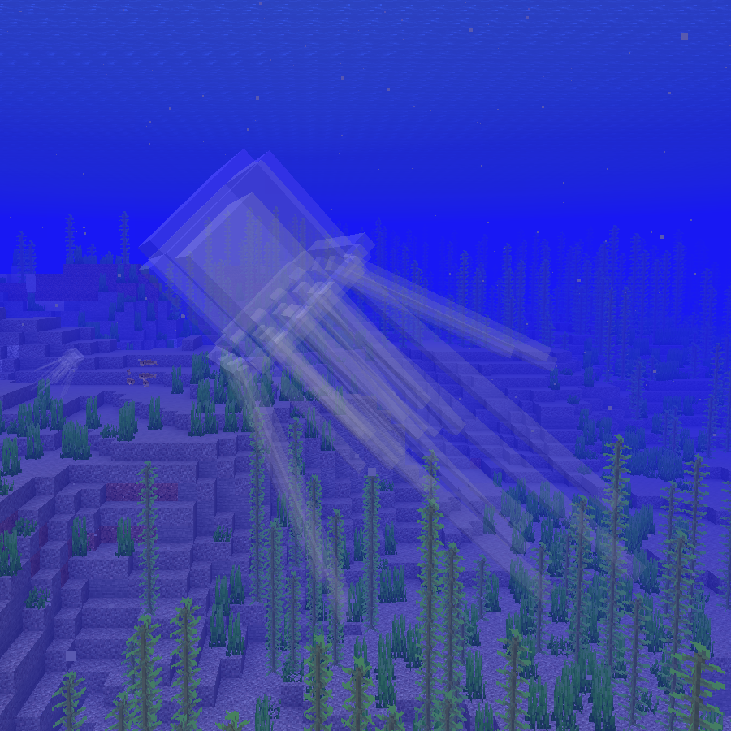
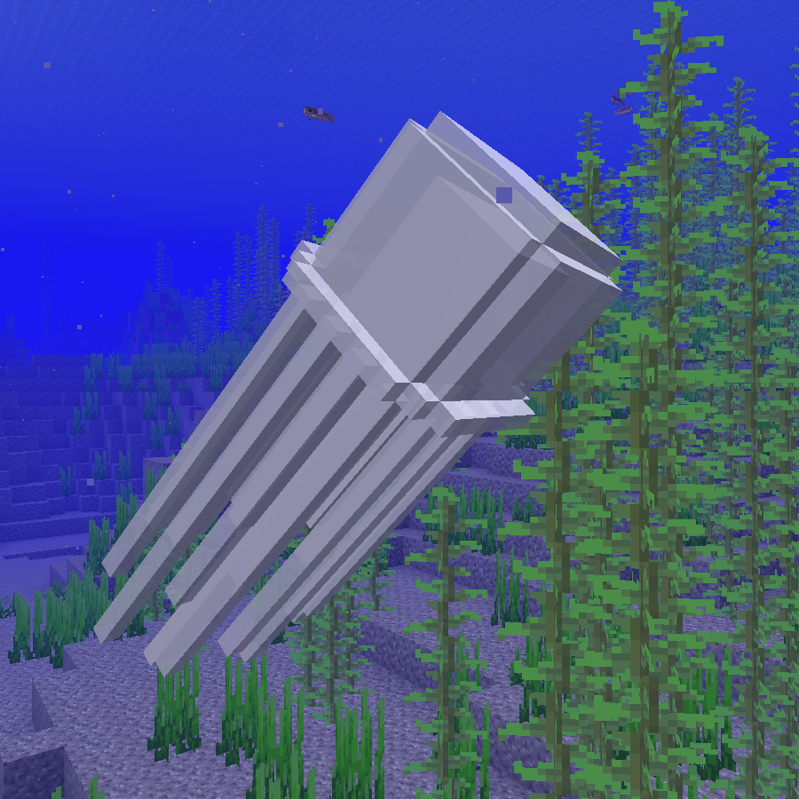
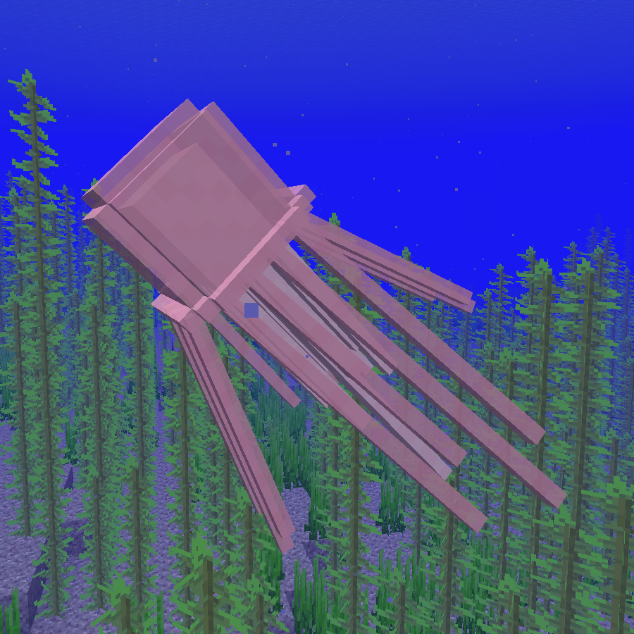
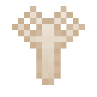
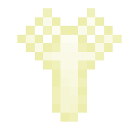
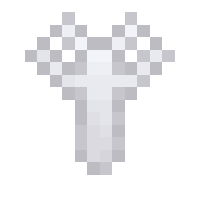
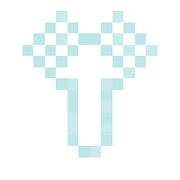
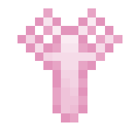